焦點 1 光的折射與全反射
光在不同的物質裡跑得不一樣快，這一件事就能解釋筷子插進水裡看起來折斷、水池看起來比實際淺、彩虹、光纖、眼鏡和相機。這一單元的第一個焦點是「光碰到兩種介質的交界會怎麼走」（折射、全反射），第二個焦點是把折射做成工具──透鏡。
一、光的折射
光由一種介質進入另一種介質時，在界面上一部分反射、一部分折射，行進方向改變（垂直入射時不偏折）。原因是光在不同介質中速率不同；折射前後頻率不變，所以波長跟著改變。這和第 9 單元水波由深水進入淺水轉彎完全是同一件事。
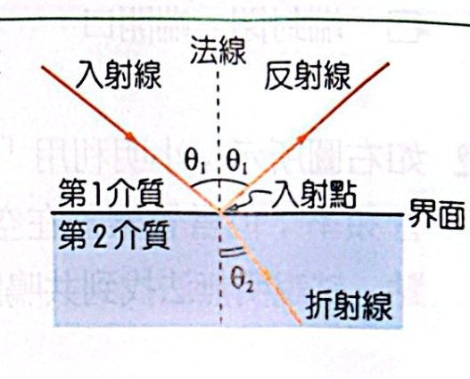
入射線、反射線、折射線與法線
n ＝ c/v；n1 sinθ1 ＝ n2 sinθ2（司乃耳定律）折射率與折射定律為什麼？
推導
由惠更斯原理（和水波折射一樣）：sinθ1/sinθ2 ＝ v1/v2 ＝ λ1/λ2。
定義折射率 n ＝ c/v（光在真空中比在該介質中快幾倍），代入 v ＝ c/n：
sinθ1/sinθ2 ＝ (c/n1)/(c/n2) ＝ n2/n1 ⇒ n1 sinθ1 ＝ n2 sinθ2
邏輯重點
- 真空（空氣）n ＝ 1，其他物質 n ＞ 1；n 愈大光速愈慢，稱為光密介質。
- 由光疏進入光密：偏向法線（角度變小）；由光密進入光疏：偏離法線。
- 兩介質折射率差愈大，偏折愈多。
- 多層平行介質：n sinθ 在每一層都相同，所以最後的出射角只看第一層和最後一層，中間各層不影響。
常見錯誤
θ 是與法線的夾角，不是與界面的夾角。題目若給「與界面夾角」，要先換成 90° 減去它。
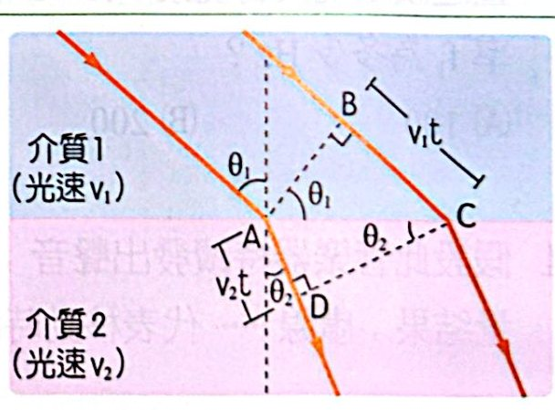
用惠更斯原理推導折射定律
二、折射的實例
側位移：光穿過兩面平行的玻璃板，出射光和入射光平行，但往旁邊平移了一段 D。板愈厚、折射率愈大、入射角愈大，側位移愈大。
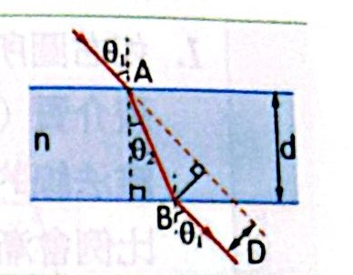
平行玻璃板的側位移
視深：h視/n觀察者 ＝ h實/n物（近乎垂直觀看）視深為什麼？
推導
從水面正上方往下看（入射角、折射角都很小，sinθ ≈ tanθ）。
從物體發出的一條光線到水面上的點，水平距離 x 固定：
x ＝ h實 tanθ1 ＝ h視 tanθ2，且 n1 sinθ1 ＝ n2 sinθ2
小角度 ⇒ n1·x/h實 ＝ n2·x/h視 ⇒ h實/n1 ＝ h視/n2
邏輯
- 從空氣看水中的魚（n2 ＝ 1、n1 ＝ 4/3）：h視 ＝ (3/4) h實，看起來變淺。
- 從水中看岸上的路燈：看起來變高（變深）。
- 深度變化也成比例：物體在水中移動 Δh，看起來只移動 Δh/n，所以魚游離你時，看起來比較慢。
注意
這個公式只適用「近乎垂直」觀看；斜著看時像的位置會更往上浮，不能直接套。
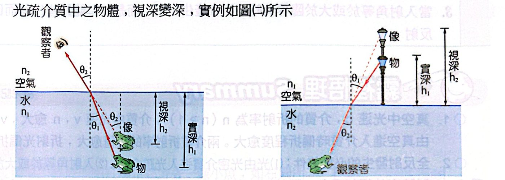
光疏看光密，視深變淺；光密看光疏，視深變深
色散：白光經過三稜鏡會散開成彩色光帶，因為同一介質對不同顏色（頻率）的光折射率不同：n紫 ＞ n藍 ＞ n綠 ＞ n黃 ＞ n橙 ＞ n紅。所以紫光偏折最多、在介質中跑得最慢；紅光偏折最少、最快。各色光在真空中速率都是 c，其中紅光波長最長、頻率最低。
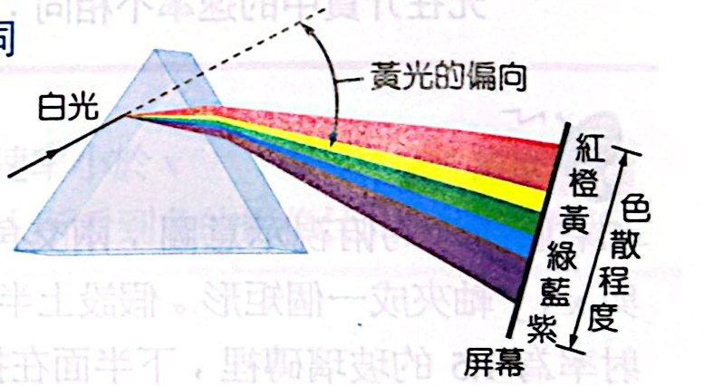
三稜鏡的色散
虹與霓：
- 虹：陽光從水滴上方射入，經兩次折射、一次反射射出，仰角約 40°～42°，外紅內紫。
- 霓：陽光從水滴下方射入，經兩次折射、兩次反射射出，仰角約 51°～54°，外紫內紅；多反射一次，所以比虹暗、位置較高、顏色順序相反。
- 人眼看到的虹或霓，每一種顏色來自不同的水珠。
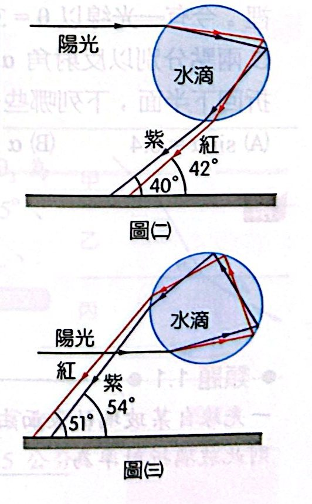
虹與霓在水滴中的光路
三、全反射
光由光密介質射向光疏介質時，折射角比入射角大。入射角愈大，折射光愈弱、反射光愈強；當折射角達到 90°，折射光就消失了。
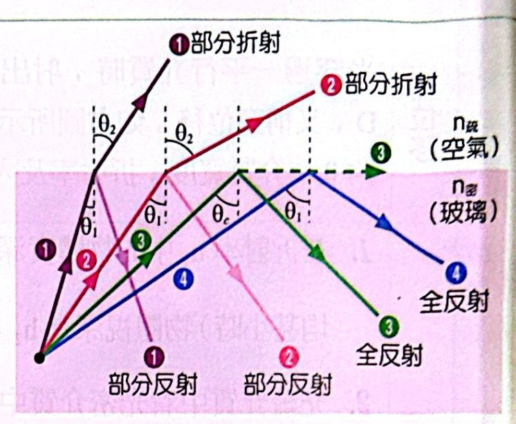
入射角增大 → 部分折射 → 臨界角 → 全反射
sinθc ＝ n疏/n密（入射到空氣時 sinθc ＝ 1/n）臨界角為什麼？
推導
折射角等於 90° 時的入射角叫臨界角 θc：
n密 sinθc ＝ n疏 sin90° ⇒ sinθc ＝ n疏/n密
全反射的兩個必要條件
- 光由光密介質射向光疏介質（反過來永遠不會全反射）。
- 入射角 ≥ 臨界角。
應用
- 光纖：纖芯折射率大、包層小，光在纖芯內一再全反射前進，可以沿彎曲路徑傳遞訊號。
- 鑽石切工讓光在裡面多次全反射，所以特別閃亮。
- 水中的點光源只能從水面一個圓形區域透出：半徑 ＝ h tanθc ＝ h/√(n² − 1)。
解題提醒
光由光密進入光疏時，一定先算臨界角，判斷會不會全反射，再決定要不要算折射。
焦點 1 範例與類題
看答案與詳解收起
答(A)(D)
解由液體（n ＝ 1.2）以 30° 射入玻璃（n ＝ 1.5）：1.2 × ½ ＝ 1.5 sinφ ⇒ sinφ ＝ 0.4
- B 點在水平鏡面，入射角（與鉛直法線夾角）＝ φ ⇒ sinα ＝ 0.4（A ✓）
- C 點在鉛直鏡面，法線水平 ⇒ β ＝ 90° − α ⇒ α ≠ β；sinβ ＝ cosα ＝ √0.84 ≈ 0.92（B、C ✗）
- 兩面互相垂直的鏡子把光「原路反向」，到 D 時入射角又是 φ：1.5 × 0.4 ＝ 1.2 sinγ ⇒ sinγ ＝ 0.5（D ✓）
- γ ＝ 30° ＝ θ，θ ＋ γ ＝ 60°（E ✗）
看答案與詳解收起
答√(sin²α ＋ sin²β)
解上表面：sinα ＝ n sinr；光在玻璃中射到相鄰垂直面，入射角 90° − r：n cos r ＝ sinβ
平方相加：n²(sin²r ＋ cos²r) ＝ sin²α ＋ sin²β ⇒ n ＝ √(sin²α ＋ sin²β)
看答案與詳解收起
答(E)
解各層 n sinθ 都相同，光線出射角與入射角相同。
由圖：在 n1 層中光線較接近法線（角度小）、在 n2 層中較斜 ⇒ n1 ＞ n2
換成單層 2d：水平總位移相同 ⇒ 2d tanθn ＝ d tanθ1 ＋ d tanθ2 ⇒ θn 介於 θ1、θ2 之間 ⇒ n 介於兩者之間：n1 ＞ n ＞ n2
看答案與詳解收起
答(D)(E)
解沿 CD 直線看，光垂直穿過玻璃，方向不偏，但視深改變。
- (A) ✗ 像由光線延長線形成，是虛像
- (B) ✗ 看起來比實際近（視深 ＝ 實深/n）
- (C) ✗ 沿視線方向的長度也被縮成 1/n，看起來較短
- (D) ○ 視深按比例縮小，看起來的速率 ＝ v/n ＜ v
- (E) ○ 平行玻璃板也會把像往觀察者拉近 t(1 − 1/n玻)，玻璃愈厚，像愈近
看答案與詳解收起
答n甲 ＝ √6/2、n乙 ＝ √3
解θ 是與界面的夾角，換成與法線夾角：甲 45°、乙 30°、丙 60°
- 乙 → 丙：n乙 sin30° ＝ 1 × sin60° ⇒ n乙 ＝ √3
- 甲 → 乙：n甲 sin45° ＝ √3 × ½ ⇒ n甲 ＝ √6/2
看答案與詳解收起
答50
解設金魚離池底 x cm。水深 100 cm：
- 直接看到的魚：實深 100 − x
- 鏡中的像：在池底下方 x，實深 100 ＋ x
視深都乘 3/4：差 ＝ (3/4) × 2x ＝ 75 ⇒ x ＝ 50 cm
看答案與詳解收起
答1、2、3、4、5 都看得到
解光從豆子射到水面距中心 r 處，r 最大為 6 cm（碗緣）：
- r ＝ 6：水中 tanθ ＝ 6/8 ⇒ sinθ ＝ 0.6；折射到空氣 sinθ′ ＝ (4/3)(0.6) ＝ 0.8 ⇒ tanθ′ ＝ 4/3
- 在眼睛高度的水平位置 ＝ 6 ＋ 18 × 4/3 ＝ 30 cm
r 由 0 增到 6，能到達的位置由 0 連續增到 30 cm。1～5 號分別在 0、6、12、18、24 cm，都在範圍內 ⇒ 全部看得到。
看答案與詳解收起
答(A)
解光從左側面以 θ 進入薄膜：sinθ ＝ 1.5 sinr（r 為與水平法線的夾角）
在薄膜與基板界面的入射角為 90° − r，要全反射：1.5 cos r ≥ √2 ⇒ cos²r ≥ 8/9 ⇒ sin r ≤ 1/3
⇒ sinθ ≤ 1.5 × 1/3 ＝ ½ ⇒ 0 ＜ θ ≤ π/6
（上表面對空氣的臨界角更小，只要下表面成立，上表面必成立。）
看答案與詳解收起
答πh²/(n² − 1)
解能透出的光入射角 ＜ θc，sinθc ＝ 1/n ⇒ tanθc ＝ 1/√(n² − 1)
透光圓半徑 ＝ h tanθc ⇒ 面積 ＝ πh²/(n² − 1)
看答案與詳解收起
答√(n1² − n2²)
解sinθ ＝ n1 sinr；在纖芯側壁入射角 90° − r 要全反射：n1 cos r ≥ n2
sin r ≤ √(1 − n2²/n1²) ⇒ sinθ ≤ √(n1² − n2²)
焦點 1 練習題
看答案與詳解收起
答(C)
解從水面上斜視水中物體，看起來比實際淺（較接近水面）⇒ (C) 錯誤。
(D) 凸面鏡成縮小正立虛像，視野廣 ○；(E) 凸面鏡只成虛像 ○
看答案與詳解收起
答(D)
解上表面：sin30° ＝ n sinr；AC 面恰全反射：n cos r ＝ 1
平方相加：n² ＝ ¼ ＋ 1 ⇒ n ＝ √5/2
看答案與詳解收起
答(B)
解第一面：sin45° ＝ √2 sinr ⇒ r ＝ 30°；頂角 60° ⇒ 第二面入射角 30° ⇒ 出射 45°
偏向角 ＝ 45° ＋ 45° − 60° ＝ 30°
看答案與詳解收起
答(A)
解液體 6 cm，視深 6/1.5 ＝ 4 cm ⇒ 硬幣看起來升高 2 cm。要保持 30 cm 的物距 ⇒ 相機向上移 2 cm。
看答案與詳解收起
答(C)
解從上方近乎垂直看，水平距離不變，深度變成 3/4。
筷子在水中實際 tan53° ＝ 4/3（深度/水平）⇒ 看起來 (3/4)(4/3) ＝ 1 ⇒ 45°
看答案與詳解收起
答(D)
解S 在 z ＝ 8：A 鏡（z ＝ 0）成像於 z ＝ −8；B 鏡（z ＝ 24）對此像成像：24 ＋ (24 ＋ 8) ＝ 56 cm
看答案與詳解收起
答(E)
解sin53° ＝ (4/3) sinr ⇒ sinr ＝ 0.6，r ＝ 37°
每次折射偏 (i − r) ＝ 16°，每次反射偏 180° − 2r ＝ 106°
總偏轉 ＝ 2 × 16° ＋ 2 × 106° ＝ 244° ⇒ 出射光與入射光方向夾角 ＝ 360° − 244° ＝ 116°
（這就是霓的光路。）
看答案與詳解收起
答(E)
解間距 d ＝ 板厚 × tanr；同入射角下 d 較大 ⇒ 折射角較大 ⇒ 折射率較小。
d甲 ＞ d乙 ⇒ 甲的 n 較小、光速較大；乙的折射率較大、光速較小
看答案與詳解收起
答(D)
解n sinθ 各層相同。
- 在 B 界面（1.6 → 1.2）全反射：2.0 sinθ ≥ 1.2 ⇒ sinθ ≥ 0.6 ⇒ θ ≥ 37°
- 在 A 界面（2.0 → 1.6）不能先全反射：2.0 sinθ ＜ 1.6 ⇒ sinθ ＜ 0.8 ⇒ θ ＜ 53°
⇒ 37° ≤ θ ＜ 53°
看答案與詳解收起
答(A)
解鏡面轉 α，反射光轉 2α ⇒ 反射光角速度 2ω ＝ 2 × 2π × 5 ＝ 20π rad/s
光點經過屏幕上離鏡最近處時速率 ＝ 距離 × 角速度 ＝ 2 × 20π ＝ 40π m/s
看答案與詳解收起
答(E)
解光垂直射入平面，射到圓弧面時 sin i ＝ d/r ＝ √3/2 ⇒ i ＝ 60°；臨界角 45° ⇒ 全反射。
圓內弦的入射角處處相等，所以一路都是 60°、都全反射：
(√3r/2, −r/2) → 圓的最低點 (0, −r) → (−√3r/2, −r/2)，每次反射轉 60°，三次之後方向變為鉛直向上，垂直射出平面。
偏向角 ＝ 180°
看答案與詳解收起
答(C)
解圓盤邊緣發出的光，在液面能透出的範圍半徑 D tanθc ＝ D/√(n² − 1)。
木板要把整個圓盤的光都擋住：半徑 ≥ R ＋ D/√(n² − 1)
看答案與詳解收起
答(E)
解光束水平射到圓洞邊緣，入射角 sin i ＝ d/R。要全反射（光由介質到真空）：sin i ≥ 1/n ⇒ d ≥ R/n
看答案與詳解收起
答(C)
解最斜的光線從左端面邊緣進入、到達右側中心 P：tan r ＝ r/d ＝ 3/4 ⇒ sin r ＝ 0.6
sinθ ＝ n sinr ＝ 1.5 × 0.6 ＝ 9/10
（角度再大，光會打到門的不透明部分。）
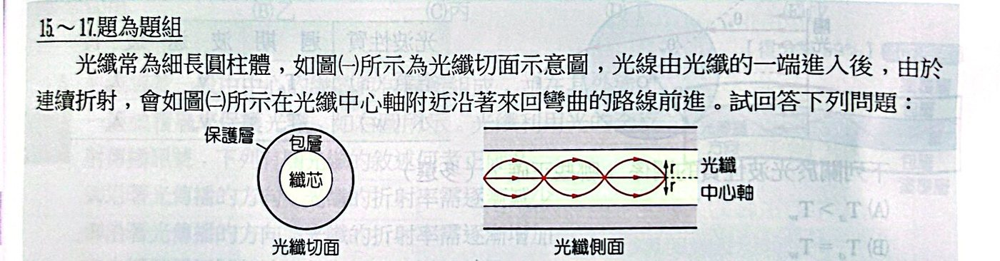
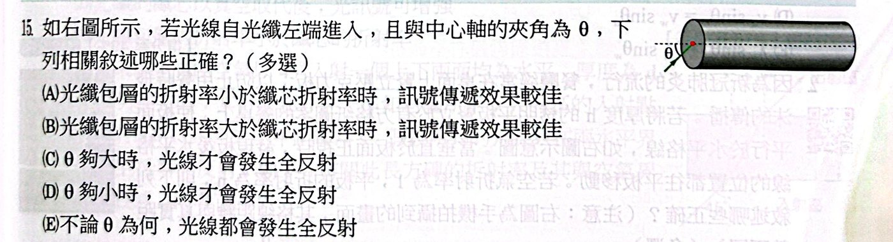
看答案與詳解收起
答(A)(D)
解
- 全反射需光由光密到光疏 ⇒ 包層折射率要小於纖芯（A ✓、B ✗）
- θ 是光線與中心軸的夾角；θ 愈小，光打到側壁的入射角愈大，才會全反射（D ✓、C ✗）
- (E) ✗ θ 太大時會折射出去
看答案與詳解收起
答否；n 隨 r 增大而減小（中心軸折射率最大）
解光線在纖芯內是彎曲前進、而且不斷彎回中心軸，代表折射率不是定值。光在折射率漸變的介質中會往折射率大的一側彎，所以中心軸處 n 最大，離中心軸愈遠（r 愈大）n 愈小。
看答案與詳解收起
答(C)
解波會往波速較小的一側彎曲（相當於折射率大）。由圖，聲速最小處約在深度 0.7 km，聲波在這一層上下彎來彎去，能傳得很遠（深海聲道）⇒ 700 公尺
焦點 1 歷屆試題
看答案與詳解收起
答(B)(D)
解
- 頻率（週期）不變 ⇒ Ta ＝ Tw（B ✓、A ✗）
- sinθa/sinθw ＝ va/vw ⇒ va sinθw ＝ vw sinθa（D ✓、C ✗）
- 波長比 ＝ 波速比：λa sinθw ＝ λw sinθa，(E) 寫反了 ✗
看答案與詳解收起
答(D)(E)
解垂直板面正視時，平行板使板後物體看起來往觀察者移 h(1 − 1/n)（與視深同理），和物體離板多遠無關（A ✗），和厚度 h 成正比（B ✗）。
- (C) ✗ (D) ○
- (E) ○ 位移量 ÷ h ＝ 1 − 1/n，量出比值就能求 n
看答案與詳解收起
答(B)
解玻璃塊的斜面互相平行、左右兩個端面也平行：光在第一個斜面折射、在第二個平行斜面折回原方向，最後垂直射出右端面 ⇒ 出射光與入射光平行（水平），只是上下平移（介質折射率和玻璃相同時不平移）。
圖中水平的是 4、5、6 ⇒ (B)
看答案與詳解收起
答(D)(E)
解光垂直射入平面不偏折，射到球面時 sin i ＝ h/R（h 為離中心軸的距離）。
臨界角 sinθc ＝ 1/1.8 ≈ 0.56。
甲 0、乙 0.2、丙 0.4、丁 0.6、戊 0.8 ⇒ 丁、戊 ≥ 0.56 會全反射
看答案與詳解收起
答(E)
解
- (A)(B) ✗ 光纖折射率沿傳播方向不變
- (C) ✗ 可以沿彎曲導管前進
- (D) ✗ 真空折射率最小，纖芯改成真空就無法全反射
- (E) ○
看答案與詳解收起
答(C)
解tan r ＝ s/d ⇒ sin r ＝ s/√(d² ＋ s²)；n ＝ sin45°/sin r ＝ √(d² ＋ s²)/(√2 s)（A、B ✗）
- (C) ○ 兩表面反射回空氣的光，都以 45° 離開入射面，彼此平行
- (D) ✗ 光由空氣射入玻璃（疏 → 密），不會全反射
- (E) ✗ 折射率是材料性質，與厚度無關
焦點 2 薄透鏡成像
四、薄透鏡
透鏡就是把折射「做成形狀」：邊緣薄中間厚的凸透鏡會聚光線，邊緣厚中間薄的凹透鏡發散光線。兩側各有一個焦點 F，兩側焦距相同。忽略透鏡厚度時，射向鏡心的光線直接通過不偏折，這種透鏡叫薄透鏡。
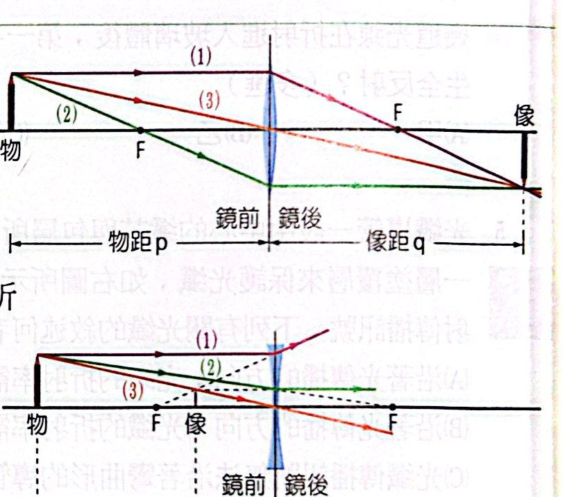
凸透鏡與凹透鏡的三條特殊光線
三條特殊光線（畫成像圖只需要其中兩條）：
- 平行主軸的光：凸透鏡經過鏡後焦點；凹透鏡的反向延長線通過鏡前焦點
- 通過（或射向）焦點的光：折射後平行主軸
- 射向鏡心的光：直線通過
| 透鏡 |
物距 p |
像距 q |
像的性質 |
| 凸 |
∞ |
f |
一點實像 |
| 凸 |
p ＞ 2f |
f ＜ q ＜ 2f |
倒立縮小實像（相機、眼睛） |
| 凸 |
p ＝ 2f |
2f |
倒立等大實像 |
| 凸 |
f ＜ p ＜ 2f |
q ＞ 2f |
倒立放大實像（投影機） |
| 凸 |
p ＝ f |
∞ |
不成像 |
| 凸 |
p ＜ f |
鏡前 |
正立放大虛像（放大鏡） |
| 凹 |
任何位置 |
鏡前焦點內 |
正立縮小虛像 |
1/p ＋ 1/q ＝ 1/f；m ＝ −q/p薄透鏡公式為什麼？
符號規定
- 鏡前實物 p 取正
- 實像（鏡後）q 取正，虛像（鏡前）q 取負
- 凸透鏡 f 取正，凹透鏡 f 取負
推導（凸透鏡、實像）
物高 ho，像高 hi（倒立）。
1. 通過鏡心的光線：兩個相似三角形 ⇒ hi/ho ＝ q/p
2. 平行主軸、再通過鏡後焦點的光線：在鏡後形成兩個相似三角形 ⇒ hi/ho ＝ (q − f)/f
3. 兩式相等：q/p ＝ (q − f)/f ⇒ qf ＝ pq − pf ⇒ 兩邊除以 pqf：1/p ＋ 1/q ＝ 1/f
放大率
m ＝ −q/p：m ＜ 0（q ＞ 0）是倒立實像；m ＞ 0（q ＜ 0）是正立虛像；|m| ＞ 1 放大。
好用的結論
- 物像之間的距離 p ＋ q 最小是 4f（p ＝ q ＝ 2f 時）。屏幕固定時，透鏡有兩個位置能成清晰像，兩位置的 p、q 互換。
- 物體沿主軸移動，像也朝同方向移動（實像、虛像皆然）。
五、透鏡的應用
- 放大鏡：物體放在凸透鏡焦點內，在鏡前形成正立放大虛像。
- 投影機：物體在 f 與 2f 之間，屏幕上得到倒立放大實像。
- 照相機與眼睛：物體在 2f 外，得到倒立縮小實像；相機靠移動鏡頭對焦，眼睛靠改變水晶體厚度（焦距）對焦。
- 視力矯正：近視戴凹透鏡、遠視戴凸透鏡，把成像調回視網膜上。
- 光學顯微鏡：物鏡先成放大實像，這個實像落在目鏡焦點內，目鏡再放大一次成虛像。
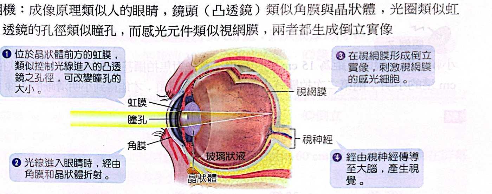
眼睛與照相機的對應
焦點 2 範例與類題
看答案與詳解收起
答(E)
解透鏡在兩光源之間：一個成實像（在另一側）、另一個成虛像（在同側），兩像重合。
p1 ＋ p2 ＝ 24；1/p1 ＋ 1/q ＝ 1/9、1/p2 − 1/q ＝ 1/9（虛像取負）
相加：1/p1 ＋ 1/p2 ＝ 2/9 ⇒ 24/(p1p2) ＝ 2/9 ⇒ p1p2 ＝ 108 ⇒ 6 與 18
成虛像的那個必在焦點內（6 cm），所以距離比為 1 : 3
看答案與詳解收起
答鏡頭往前（遠離感光元件）移動 1 cm
解拍遠景：q ＝ f ＝ 15 cm
拍 240 cm：1/q ＝ 1/15 − 1/240 ＝ 15/240 ⇒ q ＝ 16 cm
鏡頭到底片的距離要由 15 cm 增為 16 cm ⇒ 向前移 1 cm
看答案與詳解收起
答(1) 距物體 20 cm 或 60 cm 處 (2) 60 cm
解(1) p ＋ q ＝ 80，1/p ＋ 1/q ＝ 1/15 ⇒ 80/(pq) ＝ 1/15 ⇒ pq ＝ 1200 ⇒ p ＝ 20 或 60 cm
(2) 物與屏的最小距離 4f ＝ 60 cm；再小就無法成像
看答案與詳解收起
答5.6
解像距眼 25 cm，眼距鏡 2 cm ⇒ 虛像在鏡前 23 cm：q ＝ −23
1/p ＝ 1/5 ＋ 1/23 ＝ 28/115 ⇒ p ＝ 115/28
m ＝ 23 ÷ (115/28) ＝ 5.6
焦點 2 練習題
看答案與詳解收起
答(D)
解P 在 F 外、2F 內（由圖 PF 很短），像在另一側 2F 之外很遠處 ⇒ 折射光只會以很小的斜率向下、在很遠處才與主軸相交 ⇒ 丁
（戊往下太陡，會在焦點附近與主軸相交，對應的是很遠的物體。）
看答案與詳解收起
答(D)
解1/q ＝ −1/30 − 1/30 ⇒ q ＝ −15 ⇒ 鏡前 15 cm 的正立虛像
看答案與詳解收起
答(E)
解1/q ＝ 1/20 − 1/30 ⇒ q ＝ 60 cm，m ＝ −2：鏡後 60 cm、倒立、放大 2 倍的實像。
(E) ✗ 眼睛放在像後方，實像的光線繼續發散進入眼睛，看得到實像。
看答案與詳解收起
答(C)
解p ＝ 60、q ＝ 30：1/f ＝ 1/60 ＋ 1/30 ⇒ f ＝ 20 cm
看答案與詳解收起
答(B)(D)
解
- 實像 q ＝ 3p：4/(3p) ＝ 1/24 ⇒ p ＝ 32 cm
- 虛像 q ＝ −3p：2/(3p) ＝ 1/24 ⇒ p ＝ 16 cm
看答案與詳解收起
答(1) 鏡後 0.6 m，倒立放大 2 倍實像 (2) 鏡前 0.12 m，正立縮小 0.4 倍虛像
解(1) 1/q ＝ 1/0.2 − 1/0.3 ⇒ q ＝ 0.6 m，m ＝ −2
(2) 1/q ＝ −1/0.2 − 1/0.3 ⇒ q ＝ −0.12 m，m ＝ 0.4
看答案與詳解收起
答(B)
解光通過圓孔後像是從虛像點 I 發散出來。設 I 在鏡前 x：
0.5/x ＝ 1.5/(x ＋ 16) ⇒ x ＝ 8 cm ⇒ q ＝ −8
1/f ＝ 1/40 − 1/8 ＝ −1/10 ⇒ f ＝ −10 cm（焦距 10 cm）
看答案與詳解收起
答(1) π cm² (2) 169π cm²
解(1) q ＝ 1/(1/20 − 1/30) ＝ 60 cm；光錐由直徑 6 cm 的透鏡會聚到 60 cm 處。屏幕在 40 cm：直徑 6 × (60 − 40)/60 ＝ 2 cm ⇒ 面積 π cm²
(2) 凹透鏡：1/q ＝ −1/20 − 1/30 ⇒ q ＝ −12，光從鏡前 12 cm 的虛像點發散；到屏幕距離 52 cm：直徑 6 × 52/12 ＝ 26 cm ⇒ 面積 169π cm²
看答案與詳解收起
答見詳解
解f ＝ −10 cm（每格 5 cm，焦點在透鏡兩側 2 格處）：
- 平行主軸的光：折射後向上偏折，反向延長線通過鏡前焦點
- 射向鏡心的光：直線通過
- 射向鏡後焦點的光：折射後平行主軸
三條光線的反向延長線交於鏡前 7.5 cm、高度為原來 1/4 的點，即訪客的正立縮小虛像。
看答案與詳解收起
答(B)(C)(D)
解1/q ＝ −1/10 − 1/30 ⇒ q ＝ −7.5 cm，m ＝ ＋7.5/30 ＝ ＋1/4（A ✗）
- (B) ○ 正立縮小虛像
- (C) ○ 凹透鏡的像永遠縮小；p 變小，m ＝ 10/(p ＋ 10) 變大
- (D) ○ |q| ＝ 10p/(p ＋ 10)，p 減小時 |q| 也減小，像靠近大門（與物同方向移動）
焦點 2 歷屆試題
看答案與詳解收起
答(C)
解正立放大 ⇒ 虛像，q 取負：
- q ＝ −30：1/p ＝ 1/6 ＋ 1/30 ＝ 1/5 ⇒ p ＝ 5 cm
- q ＝ −24：1/p ＝ 1/6 ＋ 1/24 ＝ 5/24 ⇒ p ＝ 4.8 cm
0.5 s 內往鏡心移 0.2 cm ⇒ 0.4 cm/s 接近鏡心
看答案與詳解收起
答(B)(D)
解
- 無窮遠物體成像在焦點 ⇒ f ＝ 4.0 mm（B ✓），能成實像的是凸透鏡（A ✗），實像為倒立（C ✗）
- q 最大 4.5 mm：1/p ＝ 1/4 − 1/4.5 ⇒ p ＝ 36 mm；物距 ≥ 36 mm 時 q ≤ 4.5 都能對焦（D ✓）
- (E) ✗ p ＝ 4 m 時 q ≈ 4.004 mm，接近 4.0 mm
素養試題
看答案與詳解收起
答(E)
解由圖 p ＝ 30 cm 時 |m| ＝ 2 ⇒ q ＝ 60 ⇒ f ＝ 20 cm。
p ＝ 25：1/q ＝ 1/20 − 1/25 ⇒ q ＝ 100 cm（|m| ＝ 4，與圖中虛線點吻合）
物像距離 ＝ 25 ＋ 100 ＝ 125 cm
看答案與詳解收起
答20 公分
解p ＝ 30、|m| ＝ 2 ⇒ q ＝ 60：1/f ＝ 1/30 ＋ 1/60 ⇒ f ＝ 20 cm
看答案與詳解收起
答物距小於焦距時成虛像，無法呈現在屏幕上
解p ＜ 20 cm ＝ f 時，物體在焦點內，凸透鏡成的是鏡前的正立虛像，光線沒有真正會聚，屏幕上接收不到，所以沒有數據。
看答案與詳解收起
答(E)
解
- 只穿過外圈水的光：外圈像會聚透鏡，把遠處物體成倒立實像。
- 穿過中央（水 → 氣泡 → 水）的光：整體為發散透鏡，成正立虛像。
兩部分同時存在，所以看到既有正立虛像，也有倒立實像。